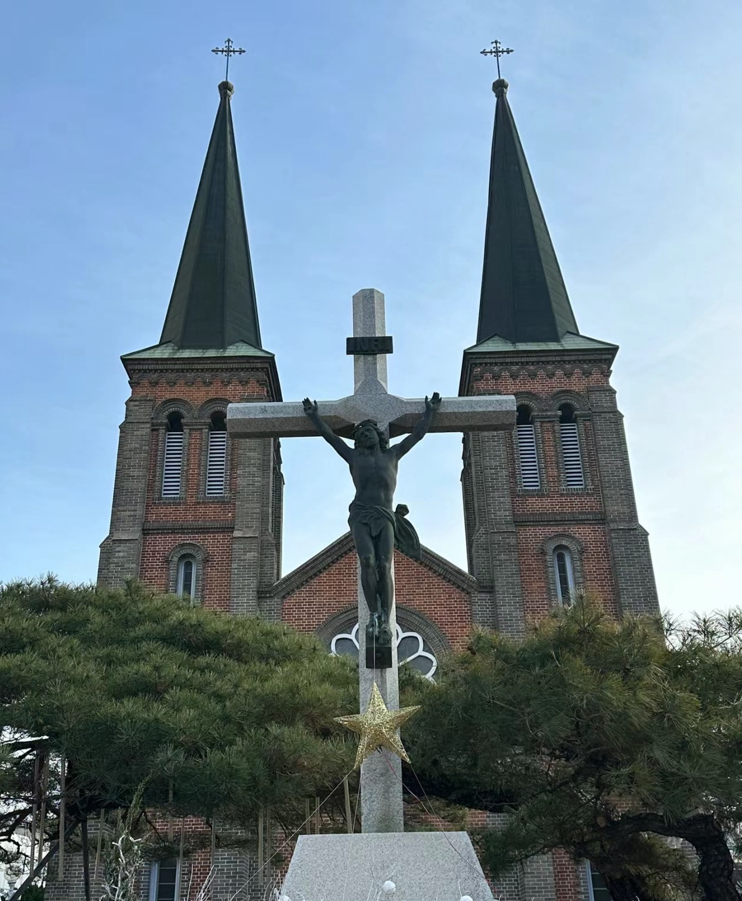
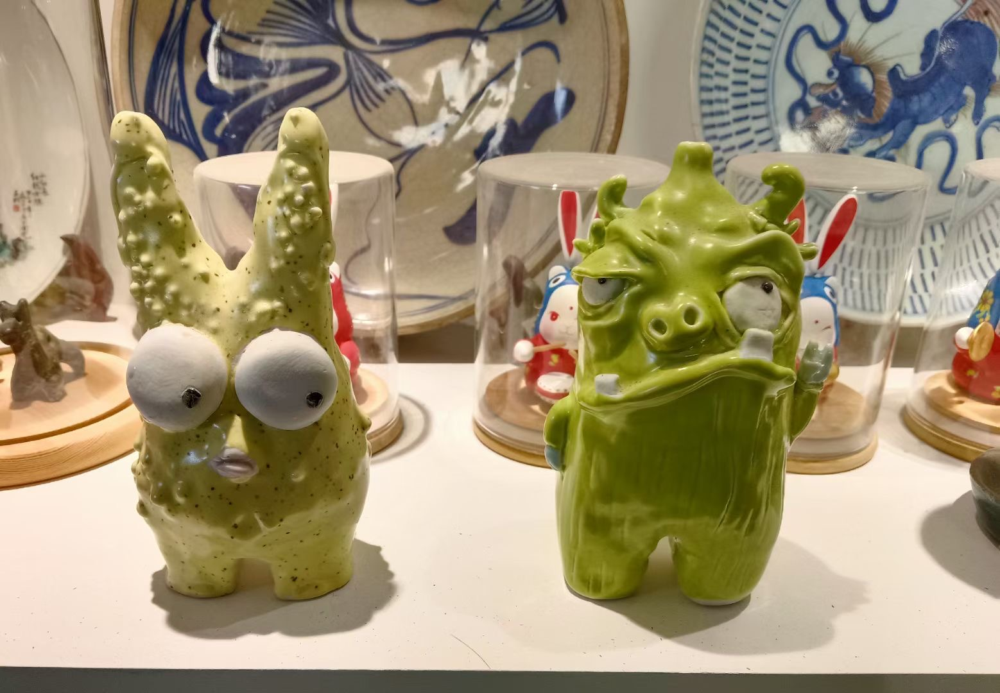

첫 번째 사진
왼쪽의 나뭇가지와 아래쪽의 지붕이 연결되어 있고, 흰색 꽃이 꾸미로 느슨한 느낌을 주며, 푸른 하늘이 붉은 지붕과 부딪쳐 시각적인 색채 대비와 구도의 조화로운 아름다움을 지니고 있다.

두 번째 사진
모두 너무 귀여운 패턴들로 전체적으로 웜톤 위주로 쿨톤 몇 가지 패턴이 꾸미로 조합되어 있어 복잡해 보이면서도 시끄러워 보이지 않고 기억력이 좋아 한 번 보고도 깊은 인상을 남길 수 있어 꼭 가보고 싶다.

세 번째 사진
커다란 등황색의 로고가 발랄하게 시선을 사로잡아 초점을 맞추거나 활력을 더해주며, 그 아래는 가늘고 긴 물체로 받쳐주어 공간을 절약해주고, 선글라스를 착용하면 등황색에 유머와 위트를 더해 발랄한 젊은이들을 사로잡을 수 있다.

네 번째 사진
고대 가옥마다 용도가 다른데 마치 여러 개 짝을 지어 만든 작은 창으로 이루어져 있고, 각각의 창은 가드레일을 덧대어 아기자기하게 만들어졌으며, 각각의 창은 높낮이와 길이가 공간의 깊이와 입체감을 나타내고 있다.

다섯 번째 사진
붉은 꽃은 건초밭의 배경에서 특히 밝고 눈에 띈다.이러한 색채 대비는 눈길을 사로잡고 꽃의 아름다움과 왕성한 생명력을 증진시켜 경관을 더욱 생동감 있고 층분하게 만들 뿐만 아니라 시각적으로 따뜻하고 환영받는 분위기를 전달하여 경관의 정서적 깊이를 더해줍니다.

여섯 번째 사진
벽돌색을 가게의 메인 컬러로 사용하면 많은 가게 중에서 두각을 나타내는 데 도움이 될 수 있다.벽돌색은 보통 따뜻하고 편안한 느낌을 주며, 심플한 가게명은 너무 많이 꾸미지 마세요, 손님들이 밖에서 가게를 볼 때 편안함을 느낄 수 있다.

일곱 번째 사진
공공의자에 귀여운 애니메이션을 디자인하면 지루한 공공장소에서 재미와 활력을 더할 수 있다.이러한 디자인은 도시 환경의 전반적인 분위기를 개선하고 공공장소를 더욱 생동감 있고 재미있게 만들 수 있다.

여덟 번째 사진
교회 건물은 높고 큰데다 뾰족한 두 지붕이 올려다보면 하늘을 뚫을 듯해 장엄함을 더했고, 짙은 회색 외벽은 적갈색이 약간 배합돼 지루해 보이지 않았다.
아홉 번째 사진
앙증맞은 디자인은 종종 사람들의 호감을 불러일으키며, 이러한 디자인 대비는 분위기를 확연히 조절할 수 있다.녹색 자체는 귀엽고 재미있는 이미지가 결합된 활기찬 색상으로, 이러한 공예품은 공간의 활력을 자극할 뿐만 아니라 일상적인 환경에 신선함을 가져다 준다.
열 번째 사진
비비드한 본훙색의 인테리어는 파격적이고 아기자기한 장난감들이 가지런히 놓여있어 눈길을 사로잡으며, 발랄한 표현으로 어린이는 물론 젊은 층까지 사로잡는다.